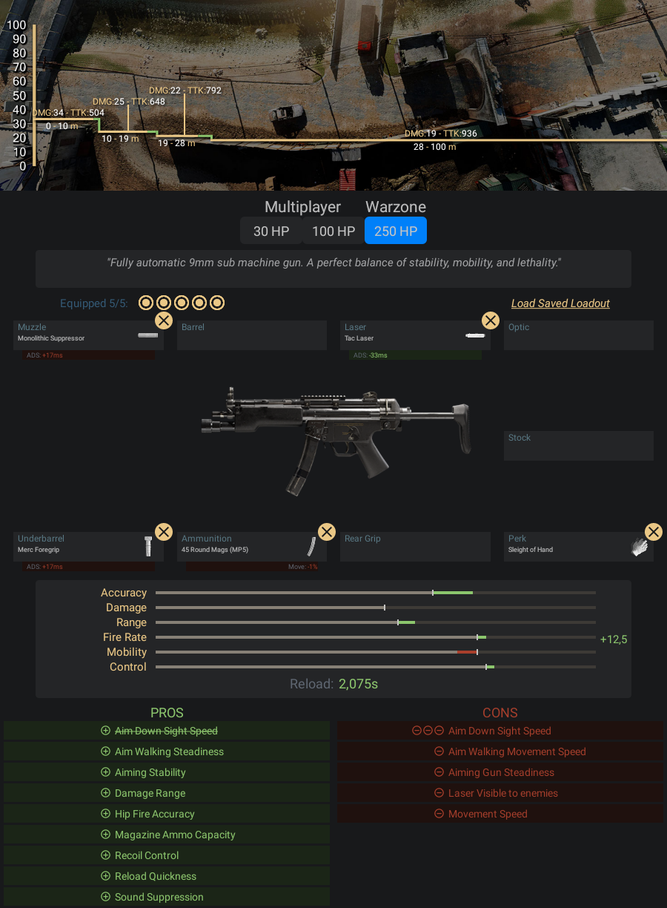

Submetralhadora 9mm totalmente automática. Um equilíbrio perfeito de estabilidade,
mobilidade e letalidade.
- Pontos Positivos:
- -Ela tem uma mobilidade alta, isso faz com que você consiga andar bem ligeiro
- pelo jogo
- -O controle de recuo dela é bem fácil de controlar nas curtas distâncias, e
- nas médias distâncias ela consegue fazer um trabalho razoável também
- -Ela aponta a mira muito ligeiro
- -Tem um dano e TTK bom para as curtas distâncias
- Pontos Negativos:
- -A partir de 10 metros o seu dano diminui muito, fazendo com que várias armas
- se sobressaem em seu lugar
Informações e dicas de como fazer uma classe da MP5:
Acessórios para MP5:
- Boca - Supressor Monolítico
- Laser - Laser de 5 mW
- Acoplamento - Empunhadora de Mercenário
- Munição - Carregador de 45 projéteis
- Vantagem - Mãos Leves